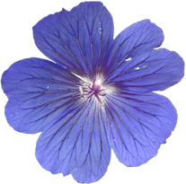

See the book at amazon.co.uk or amazon.com
Related Books

See Digital Multimedia at amazon.co.uk or amazon.com

See Web Design: A Complete Introduction at amazon.co.uk or amazon.com
The authors are not responsible for the content of any external sites linked to from digitalmediatools.org
All material on this site is ©2007–2010 MacAvon Media and may not be reproduced without permission.
Flash Exercise Files
The material offered for download in this section of the site is copyright. You may not publish any of this material in any form, reproduce it on public Web sites, or pass it off as your own. It is supplied for use in private and institutional study only.
Motion
Download the bouncing ball Flash document [FLA:102.0kB]
The Flash document provided here includes a ball with a simple linear motion tween over thirty frames. Read the section on motion guides on pages 325–327 and refer back to the preceding section on custom easing. Starting with the file provided, create your own animation of a bouncing ball using a guide layer and a background of your own. Remember that you will need to apply some rotation to the ball and custom easing to create a convincing effect. Our version of this animation is shown in Figure 6.36. You can edit the ball symbol to change its design and colours.
Download the cog shape [Illustrator:122.6kB]
The file supplied here is the Illustrator artwork shown in the book in Figure 6.38. Read the section on copying and pasting motion tweening (pages 330–332). Import the Illustrator file onto the stage (not into the library) of a new Flash document. Select everything on the stage and group it so that you can apply a motion tween. (Conversely, if you want to edit the artwork to create your own version of the design, by changing the colours etc., you will need to ungroup the imported object to get at its components to change them. You will still need to group everything together again after you have made your changes.) Add frames to the timeline and create a motion tween, so that the shape rotates fairly slowly. Use custom easing to make the motion interesting. Create a composition of two or more interlocking cogs, moving in synchronization by copying and pasting the cog and the tweening. Add an original background to complete the piece. Our simple version of this animation is shown in Figure 6.41, but you should try to create a better animation than this.
Repeat the exercise, but this time import the cog into the library as a symbol. Edit this symbol (double-click cog.ai in the Library panel) by adding frames and creating a motion tween, as before. Create your composition from instances of this animated symbol.
Which method do you find the more successful?
Animated Symbols
Download the Flash document with star [FLA:45.0kB]
The file supplied here contains a single keyframe containing an instance of a graphic symbol, which itself consists of a single keyframe containing a graphic of a star, filled with a gradient. Refer to the section on animated symbols that starts on page 335. Add at least 30 frames to the symbol's timeline, and tween the brightness to make the star pulsate. Experiment with easing. Create a compostion using several instances of your pulsing star symbol against a suitable background. Experiment with altering attributes of the instances, including their size, tint and alpha settings, to give a range of different pulsating stars.
 Download the Flash document with flower [FLA:122.0kB]
This file simply contains a bitmapped image of a flower, imported onto the stage. Read the section on tweening filters (pages 339–340). Create an original animation – different from our version shown in Figure 6.48 – by simply tweening your choice of filters in the Properties panel. You will need to start by converting the image to a movie clip symbol and creating a motion tween.